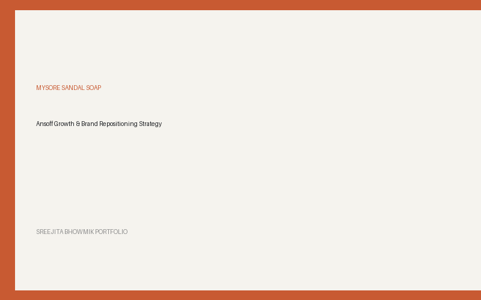
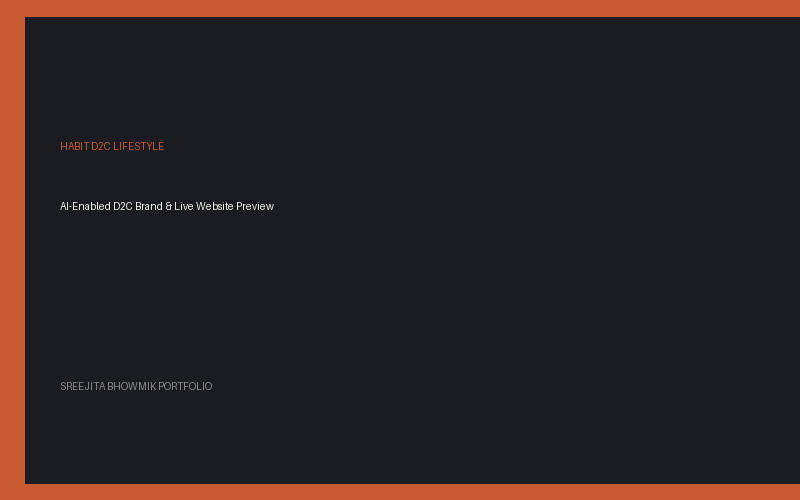
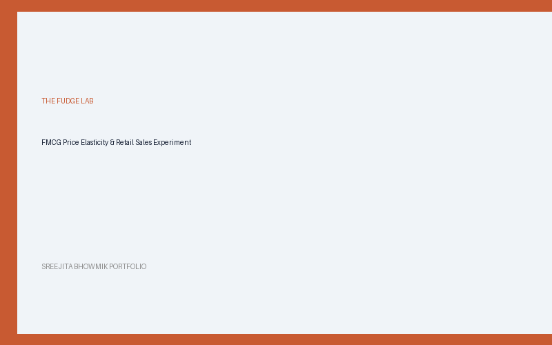
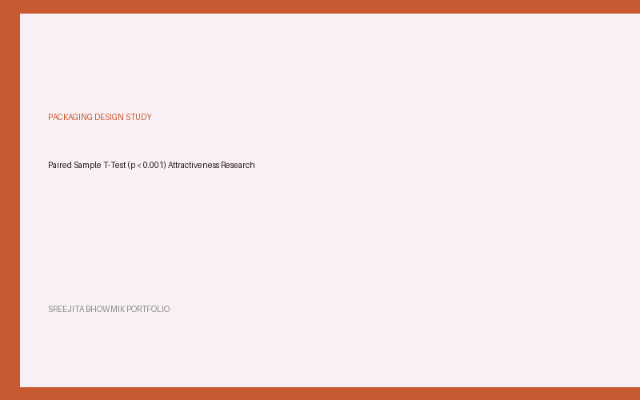
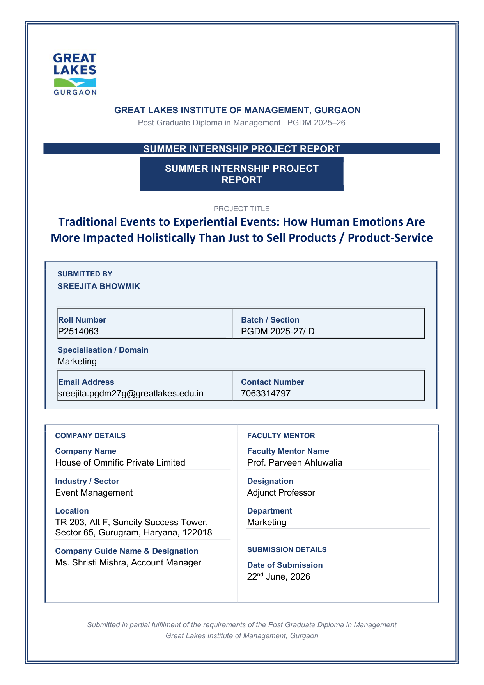

Management professional skilled in brand strategy, consumer insights, and experiential marketing. I explore business problems through applied psychology and structured research, decode human behavior through empirical insights, and translate strategy into high-impact brand touchpoints, content, and growth.
My journey began with a deep fascination for human behavior. Graduating with B.A. (Hons.) Applied Psychology from Delhi University, I learned to dissect cognitive frameworks, perception drivers, and emotional triggers.
Transitioning into management studies at Great Lakes Institute of Management, I realized that modern marketing is often broken when it relies solely on intuition or superficial data. True brand strategy requires bridging behavioral psychology with rigorous quantitative experimentation, experiential touchpoints, and clear narrative design.
During my internship at House of Omnific, I applied this philosophy on-ground—shaping experiential brand activations and pitch deck visual narratives for leading national brands.
Click on any project card to view the full technical deep dive, methodology, insights, and strategic outcomes.

Brand StrategyAnalyzed the ₹30,000+ Cr Indian soap market and consumer insights to formulate an Ansoff-driven growth strategy and MarCom repositioning for a legacy heritage brand.

Brand StrategyBuilt an AI-enabled D2C lifestyle brand from scratch, establishing customer journey maps, unit economics, and positioning for the ₹4,200 Cr urban lifestyle market.
Engineered an automated CRM data enrichment and scoring pipeline that eliminated ~80% of manual lead cleaning tasks and accelerated sales routing consistency.

AI & ExperimentalExecuted a live retail sales experiment selling 290+ FMCG units across varied pricing tiers, deriving empirical demand elasticity curves and achieving ~6.4% profit margin.

Consumer ResearchControlled experimental research with 56 respondents, statistically proving that subtle aesthetic packaging redesigns yield significant increases in perceived value (p < 0.001).
Summer Internship at House of Omnific Pvt. Ltd., Gurugram — Investigating the shift from traditional execution-led events to emotion-driven experiential brand journeys.

Experiential concepts, global brand breakdowns, multi-city distributor meets, corporate conference themes, and wellness IP curation. Click below to view and download full project presentations.
Decoded 10 major global brand activations at Coachella 2026 (Rhode, e.l.f., Barbie, Neutrogena, 818 Tequila, Pinterest, YouTube backstage) focusing on camera-first design and turning audiences into distribution engines.
Curated creative theme options ("HALLA BOL #AbkiBaarRecordPaar", "DAHAAD"), stage designs (Angular Futurism), team-building mechanics (Build to Sail, Squad Game), and custom Rajasthani folk-rap anthem integration.
Multi-city distributor conference strategy. Designed grunge-inspired physical invitations with custom tyre keychains, 3D venue layout, and the "REVVUP Runway Experience" tyre couture fashion show.
Curated multi-day wellness retreat IP ("Pause. Feel. Return Different.") presented by House of Omnific, featuring 4 pillars (Activities, Music, Pop-ups, Rest/Hydration) and venue curations across Delhi, Mumbai, and Bangalore.
Research and development for custom musical IPs, folk-fusion artists, and entertainment curations for brand activations.
Creating poetry and audio-visual narrative content on Instagram (@sreedotcom) serves as my live testbed for audience psychology. It allows me to test narrative pacing, hook retention, and emotional resonance in real-time.
Key Professional Learnings: Earning audience attention requires replacing interruption with emotional value, maintaining consistency, and designing content for immediate participation.
Explore Content Portfolio (@sreedotcom)An exploration of how modern marketing has shifted from traditional interruption to seamless integration. Analyzing brands like Zomato, Swiggy, Nykaa, Rhode, CRED, Nike, Apple, and Spotify, this paper evaluates Seth Godin's Permission Marketing and Friestad & Wright's Persuasion Knowledge Model—while questioning the thin line between relevance and consumer autonomy in an AI-driven era.
Academic journey across business management, applied psychology, and schooling.
Track record across experiential marketing, student leadership, and social impact initiatives.
Core competencies extracted directly from resume verification.
Every effective solution begins with dissecting the business context, consumer psychology, and market environment before jumping to creative tactics.
Stop at observations and you miss the root cause. Dig deeper using psychological frameworks and empirical data to uncover true consumer motivations.
A strategy is only as good as its execution. Whether an experiential activation or a D2C workflow, touchpoints must be feasible and ROI-aligned.
Ideas require clarity to move stakeholders. Replace corporate buzzwords with precise, evidence-backed narrative storytelling that drives action.
Download my comprehensive resume for complete details on academic qualifications, project breakdowns, and professional certifications.
Whether you are hiring for brand strategy, market research, or experiential marketing—or exploring strategic collaborations—I'd love to connect.